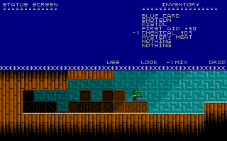

Larry The Dinosaur 2The Official Strategy Guide |
|
|
Guide Sections Home Building Layout Walkthrough Part I Part II Part III Part IV |
The yellow-access card can be found on the rooftop, but there's a problem there. The door to the rooftop needs
yellow access or a valid passcode to open. There is a janitor's note on the 12th floor which has the passcode written on it. The passcode is different all the time, so you need to retrieve it to know what that code is. However, you stumble across another problem when you explore the 12th floor looking for the janitor's note. There's some alien goo that is blocking the path. Larry notes how he needs some type of chemical to break down this goo. Head to floor 3, the lunch room, and pickup the blue spray-bottle, also known as chemical 409. If you "LOOK" at chemical 409, you'll read that it is a useless chemical as of now, but when mixed with some other chemical, it can form a strong acid. This chemical won't work with the alien goo until you find the correct thing to mix it with first. The warning on the chemical says to keep it away from processed foods. In the storage room on floor 13, there is some "mystery meat" that you will find. The description of it says that it has some certain chemicals in it. Mix the "mystery meat" with "chemical 409" and they will form into "chemical 410".  Now you have your strong chemical to take down the alien good with. Head back to the ventilation control, floor 12, and "USE" the chemical on the alien goo. If you're not close enough to the alien goo, Larry will say so. When the alien goo is all eaten away, you can head to the back of the room. There will be a white note on the floor that you can pick up. That is the janitor's note which has the random access code on it. "LOOK" at the note to get a description of it and to read what the code is. Head back to the rooftop and type in the 4-digit passcode. Walk infront of the console with the moving green and yellow bars and hit the number keys to enter the code. Remember that each time you run the game, the passcode is different. The passcode on the picture above will most likely not work for you. There is a boss on the rooftop that you have to kill to get the yellow-access card. The door closes behind you, and since you don't have yellow access yet, you can't go back until you defeat the boss. Make sure you have plenty of ammo and first-aid kits before you walk past the door. After you walk through the door, some dramatic boss music will play letting you know something dangerous is near. The boss is easy if you have the right weapon. The pistol will do well by holding him back and getting off plenty of shots. The desert-eagle is powerful and will take down his health quickly. The shotgun will get the job done if you can dodge well. Since you can't access the machine-gun yet, the boss won't be super easy to beat. After you defeat the boss, a yellow card will appear where he was killed. Pick that up and Larry will contact Barney informing him that he has found the card. Barney tells Larry to meet him back in the weapon's locker. Continue to Part III |